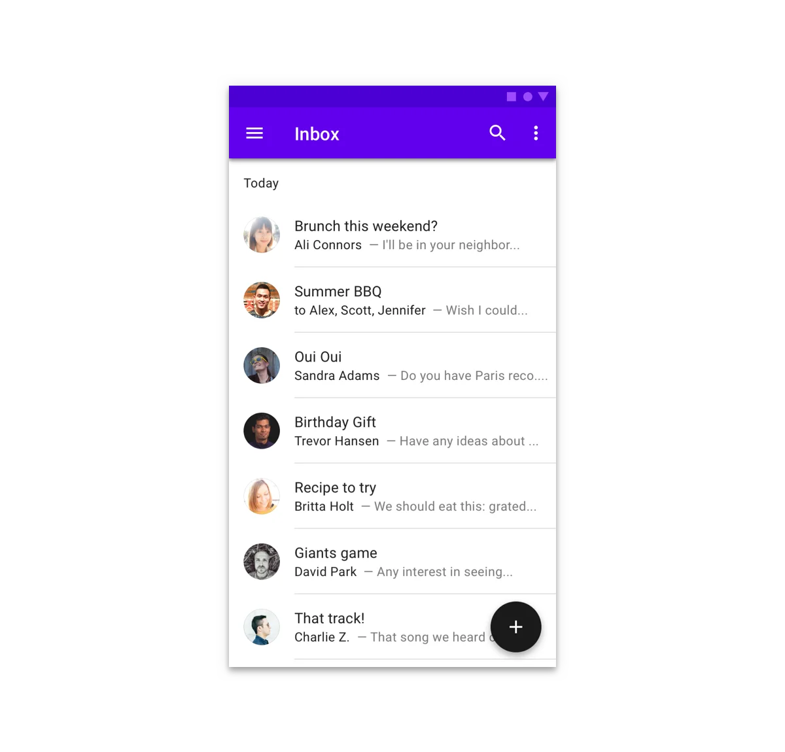
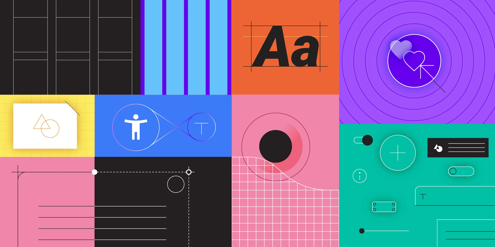
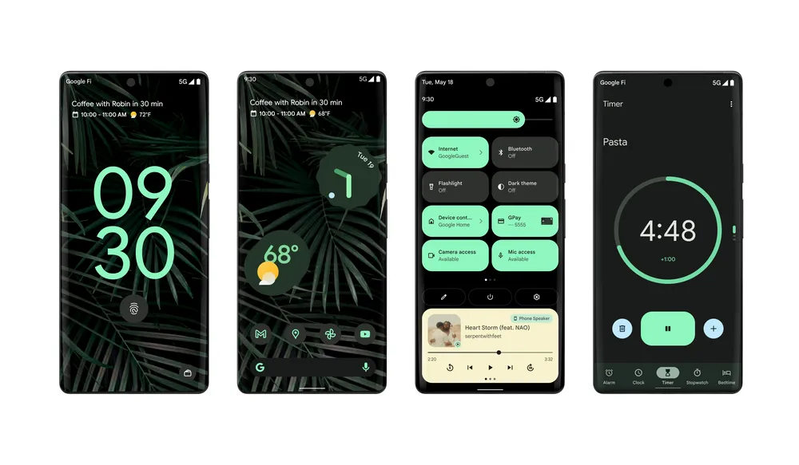
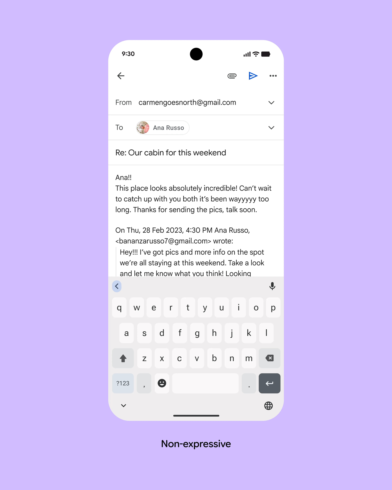
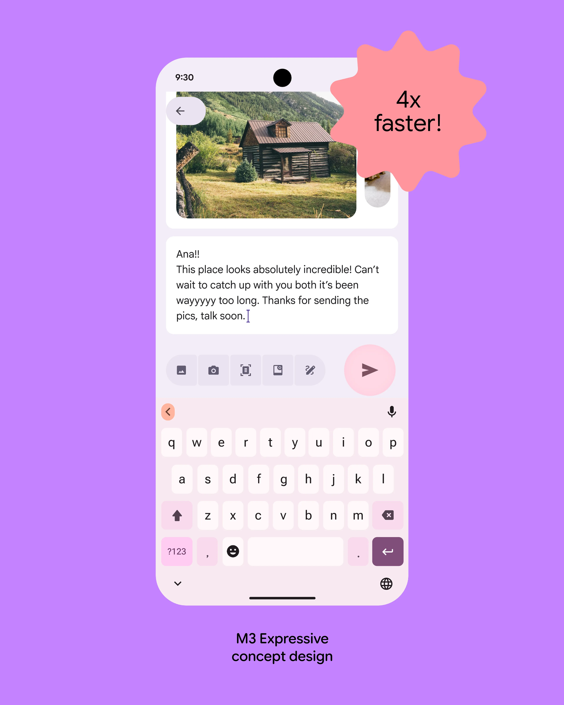

I have been using Google products for most of my life. Search, Gmail, Android, Maps—if Google made a smart refrigerator tomorrow, there is a non-zero chance I would hand it my grocery list.
Despite this, I had never stopped to ask why all of those products feel related. They do not look identical, but they behave like cousins at a family reunion. They use the same gestures. They arrange information in familiar layers. They all seem to agree that a button should look very button-y.
The answer is Material Design. Google introduced it in 2014 as a shared visual language for software. What interests me is that the language did not stand still. Each major version changed its answer to one basic question: what should digital material actually feel like?
01 · MATERIAL 1
Software discovers gravity
Material begins with paper, ink, light, and a very committed little circle.
Before Material, Google’s products worked well enough, but they did not always look like they came from the same company. Android, Gmail, Search, and Chrome were each solving their own interface problems. The result was less “design system” and more “group project where everyone made their slide separately.”
Material Design debuted at Google I/O in June 2014. Internally, it had been called Quantum Paper, which is both an excellent project name and a phrase I would expect to hear immediately before someone opens a portal.

The interface is built from flat rectangular surfaces. The app bar casts a shadow, rows sit on a white sheet, and the circular Floating Action Button appears to hover above everything else.
Image: Google DesignThe paper metaphor gave the system rules. Surfaces could stack and cast shadows. They could move, expand, and join together, but they could not casually pass through one another. Motion explained where something came from and where it went. Google’s mantra was simple: motion carries meaning.
What changed
- Surface
- Digital paper arranged on a clear z-axis
- Type
- Rigid grids and Roboto typography
- Color
- Bold primary colors with bright accents
- Signature
- The Floating Action Button, or FAB
The FAB captured the entire idea in one component. It was the most important action, pulled off the page, given a brighter color, and placed closer to the user. It did not whisper “compose.” It floated above your inbox and announced it.
02 · MATERIAL 2
A language becomes a system
The paper stays, but Google hands designers a much larger box of parts.
Material 1 established the philosophy, but philosophy does not ship a settings screen. Google had designed more than twenty components at launch and only implemented a small fraction of them in code. The next era focused on turning the concept into something teams could reliably build with.

Material 2 expanded beyond one Google look. Color, typography, shape, spacing, accessibility, and coded components became parts of a connected theming system.
Image: Google DesignThe 2018 update introduced Material Theming and a larger collection of coded components across Android, iOS, Flutter, and the web. Teams could start with the same buttons, navigation patterns, and bottom sheets, then systematically customize color, type, and shape to fit their own brand.
This was important because the first version was almost too recognizable. A lot of Material apps looked like Google apps wearing different name tags. Material 2 kept the shared grammar while allowing more accents.
Think of it as Google handing everyone the same box of LEGO bricks. The pieces fit together, but nobody is required to build the same little house.
What changed
- Surface
- Reusable components across more platforms
- Type
- Variable fonts and brand-specific scales
- Color
- Theme roles rather than one fixed palette
- Signature
- Material Theming and coded components
03 · MATERIAL YOU
The user joins the design team
Material 3 stops asking for the perfect palette and starts generating one for each person.
Material You arrived with Android 12 in 2021. The headline feature was dynamic color: Android could sample a wallpaper, choose a seed color, and generate a coordinated set of tones for the lock screen, notifications, settings, widgets, and supported apps.

One leafy wallpaper produces a family of greens across the clock, icons, Quick Settings, media controls, and timer. The screens coordinate without becoming identical.
Image: Google / AndroidA color palette was no longer a decree issued from a conference room. It became a relationship between the device and the person holding it. Google’s color system generated complementary and contrasting tones while maintaining usable contrast. Your phone still followed the rules, but the rules finally included you.
The shapes changed too. Controls grew larger and rounder. Widgets became more flexible. Empty space was allowed to breathe. Material was moving away from literal sheets of paper and toward something adaptive—less like stationery and more like clay.
What changed
- Surface
- Soft, adaptive containers and widgets
- Type
- Larger display text with clearer hierarchy
- Color
- Wallpaper-driven dynamic color
- Signature
- A system personalized to the individual
04 · MATERIAL 3 EXPRESSIVE
Software develops a personality
Color, shape, scale, and motion become tools for emotion—and for getting things done faster.
Google announced Material 3 Expressive in 2025 and continued expanding it at I/O 2026. The latest iteration adds stronger shape contrast, bolder typography, emphasized actions, adaptive components, and a more natural motion-physics system.
The name makes it sound like Material found a journal and started writing poetry, but the goal is practical. Expressive design uses visual emphasis to tell your eyes what matters first.

STANDARD M3
M3 EXPRESSIVEMove the important action into focus
In Google’s study, the conventional design placed Send in a small top toolbar. The expressive version made Send larger, contained the message, and moved the action near the keyboard. Participants found it four times faster.
Images and research: Google DesignThis is the most interesting turn in Material’s history. The first version used physical rules to make software understandable. Expressive uses emotional signals—contrast, scale, shape, motion—to make the next action obvious.
Google reached this direction through 46 studies involving more than 18,000 participants. Larger targets and clearer containment were not just preferred; they helped people spot key interface elements faster. Apparently “make the button bigger” can be a research-backed strategy, provided you also know which button deserves it.
What changed
- Surface
- Contrasting containers and flexible shapes
- Type
- Emphasized scale, weight, and variable type
- Color
- More vibrant, intentional focal points
- Signature
- Emotion-driven UX backed by research
THE THROUGH LINE
Four answers to one question
Use paper, elevation, and motion to explain where things live.
Turn the language into components that brands can actually ship.
Let the system adapt its color and shape to the person using it.
Use expression to improve focus, usability, and delight.
CONCLUSION
It is still material.
It is just less literal.
Material Design started by giving software a physical metaphor. Paper established where things lived, shadows explained which surface was on top, and motion showed how one state became another.
Over time, Google kept the clarity and loosened the metaphor. Material became themeable, personal, and expressive. The important part is no longer whether a card behaves exactly like a sheet of paper. It is whether every visual choice helps communicate what the interface wants you to notice or do.
Twelve years later, Material is not one recognizable Google look. It is a system for making different looks feel coherent. That is a much harder trick—and, in my opinion, a much more useful one.
PRIMARY SOURCES